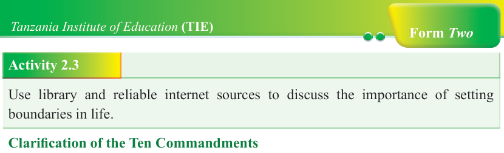
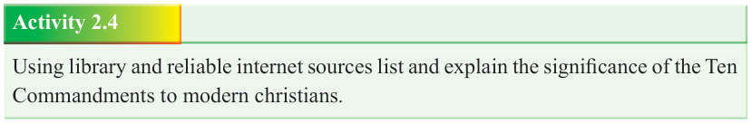

Form Two
Tanzania Institute of Education (TIE)


Bible Knowledge
31



Activity 2.3
Use library and reliable internet sources to discuss the importance of setting boundaries in life.

Clarification of the Ten Commandments
The Ten Commandments (Exodus 20:1-17) are also referred to as the ten words or the Decalogue. These are supreme expression of God’s will hence their merit capture close attention of every believer. The Ten Commandments are simply the digest of the entire Torah in the Pentateuch. Although the Ten Commandments might be arranged differently across Christian denominations, they all bear their origin from the book of Exodus.

Figure 2.2: Moses holding the tables of the Ten Commandments.
Activity 2.4
Using library and reliable internet sources list and explain the significance of the Ten
Commandments to modern christians.
Engaging the two commandments: “You shall not kill” and “You shall not commit adultery”

The Commandment: “You shall not kill” (Exodus 20:13) provides divine prohibition that one shall never deliberately and directly take the life of an innocent human being, for life is both precious and sacred. Like in the context of ancient Israel, the prohibition addresses today’s controversial moral issues relating to life and death.